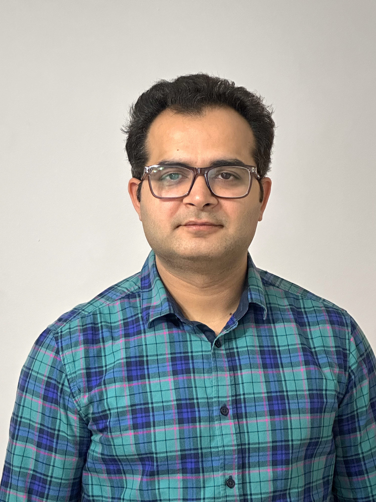

Staff Scientist
Northwestern University
Evanston, IL · USAAI for Quantum · Quantum for AI · Time Series Forecasting

Bridging experimental particle physics, modern AI systems, and quantum computing to solve frontier problems.
Designing scalable GenAI systems, fine-tuning LLMs (LoRA/QLoRA), building RAG pipelines, and multi-agent architectures for Fortune 500 clients. Physics-inspired feature engineering for time series — submitted to NeurIPS 2026.
Neural networks for quantum state tomography (10× speedup), AI-driven polarization control for quantum fiber communication (95–99% fidelity), and benchmarking VQCs on NISQ hardware via gradient analysis.
7 years on the CMS Experiment at CERN. Led Higgs boson searches, four dark matter analyses (monoHbb, monoH combination, MET scanning & reconstruction), hadronic tau reconstruction (HPS), and 10 PB pipelines.
I am an AI Researcher (Staff Scientist) at Northwestern University's Department of Electrical & Computer Engineering, with a PhD in Experimental High Energy Physics and 18+ years of experience in machine learning, statistical modeling, and large-scale data analysis.
My work spans three interconnected frontiers: modern AI and GenAI systems — LLM fine-tuning, RAG, and multi-agent architectures for Fortune 500 clients; experimental particle physics — processing 10 petabytes of proton-proton collision data at CERN; and AI for quantum computing — neural approaches to quantum state reconstruction, signal correction, and hardware benchmarking.
Before Northwestern, I spent 7 years at CERN as a postdoctoral researcher. I led four dark matter searches and orchestrated the mono-Higgs combination across five global teams (20 senior scientists), producing the world's best upper limit on dark matter production cross-section.
My PhD contributed directly to the discovery of the Higgs boson. I developed a novel analysis strategy published in JHEP and was the first Indian PhD student to independently lead a CMS analysis from inception to publication at CERN.
I teach "Everything Starts with Data" (MLDS-400) in Northwestern's graduate ML & Data Science program and have mentored 6 PhD students and 20+ undergraduate and master's students.
Filter by domain. Spanning quantum ML, GenAI systems, and particle physics.
NN architecture trained on synthetic data with transfer learning to expedite QST in realistic lab environments — far faster than maximum likelihood estimation.
State-space model that tracks and corrects quantum signals using a classical reference + time series modeling on synthetic and real fiber data. No direct quantum measurement required.
Benchmarking superconducting backends for variational quantum circuits across devices and circuit depths. Quantifies gradient stability as a proxy for trainability on near-term hardware.
Automated feature engineering that projects time series into a high-dimensional space using fluid-dynamics mathematics (NS decomposition) to capture complex temporal dynamics.
Extended Autoformer, Fedformer, and DLinear to handle heterogeneous data (static + temporal covariates). Multiple integration strategies designed and evaluated. Insights shared with Allstate.
Multi-agent system (AutoGen + open-source LLMs) that translates natural language into real-time analytics workflows. Agents handle ingestion, summarization, code generation, and visualization.
Led a team of 4 master's students. Fine-tuned Gemini for NL-to-SQL over enterprise databases with strategic cost and latency reduction.
RAG-based assistant with PII guardrails, toxicity filtering, hallucination detection (DeepEval, AgentEval), and LLM-as-judge evaluation for a Fortune 500 insurance client.
Orchestrated combination of five mono-Higgs analyses across five global teams (20 senior scientists). Unified heterogeneous datasets and statistical models into a single framework.
Led four DM search projects. ML-driven signal-background discrimination on highly imbalanced 10 PB datasets. Novel analysis category boosted exclusion limits by 20%.
Developed and optimized a multivariate algorithm (Hadron Plus Strip) for detecting hadronic tau decays in CMS proton-proton collision events. Presented at ICHEP 2012, Melbourne.
Novel analysis strategy for the Higgs boson search using multivariate methods. First Indian PhD to independently lead a CMS analysis from inception to publication.
Open-source LLMs autonomously driving a full data science pipeline — from ingestion to insights to visualization.
Dept. of Electrical & Computer Engineering · Evanston, IL
Florida State University, USA & National Central University, Taiwan
Saha Institute of Nuclear Physics · University of Calcutta · CERN, Geneva
Awarded for unprecedented contributions to the discovery and precision measurement of Higgs boson properties as a member of the CMS collaboration at CERN.
Prestigious national fellowship to carry out a dark matter search program and CMS detector upgrade contributions.
Awarded for quantum machine learning simulation and development of new ML models for quantum communication research.
Selected as a national judge for the DataFest data science competition by the American Statistical Association.
Active referee for the Journal of High Energy Physics (JHEP), Data Science Journal (DSJ), and ICLR (session: AI4DiffEqtnsInSci).
Granted six consecutive 3-month extensions at CERN for extraordinary scientific performance — a rare distinction during PhD.
Designed and delivered full curriculum for 55 students with diverse academic backgrounds. Topics: data categorization, EDA, the ML lifecycle, feature engineering, tree models, SVMs, clustering, and optimization — with hands-on real-world projects.
Taught best practices in data science and machine learning to undergraduate and PhD students at the CMS flagship analysis school at Fermilab.
Mentored and supervised 6 PhD students and 20+ undergraduate and master's students on projects spanning wildfire prediction, time series forecasting, and agentic AI systems.
Dissertation: Development of a Novel Analysis Strategy to Search for Higgs Boson in an Uncovered Phase Space. Contributed to the discovery of the Higgs boson. First Indian PhD to independently lead a CMS analysis from inception to publication (JHEP). Awarded 18 months onsite at CERN. Presented at four international conferences.
Open to research collaborations, consulting engagements, and speaking opportunities.